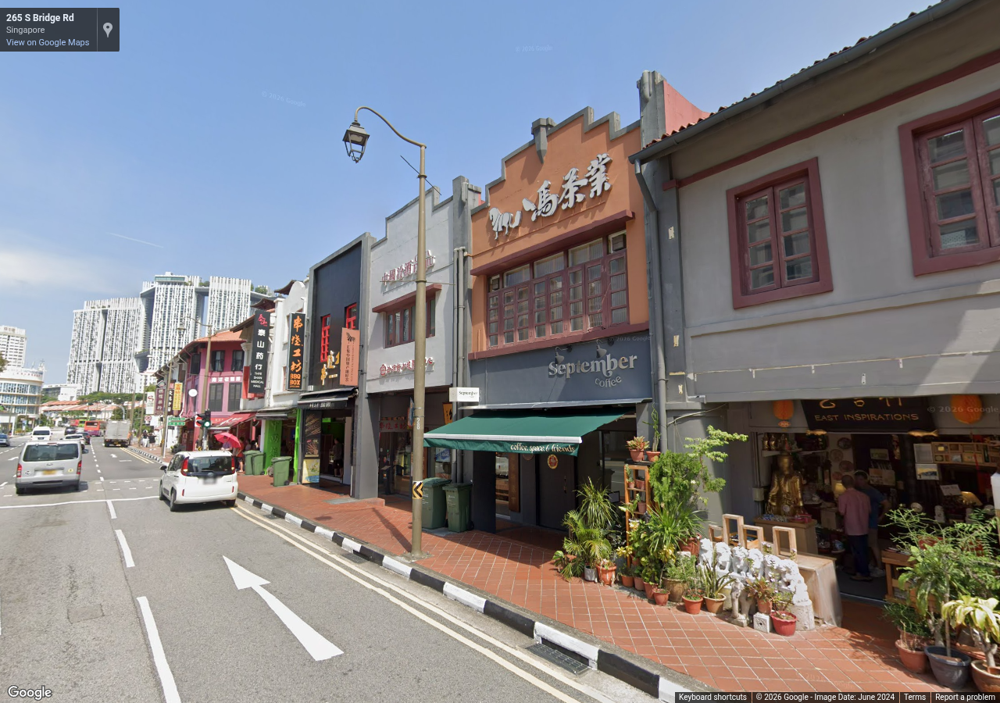
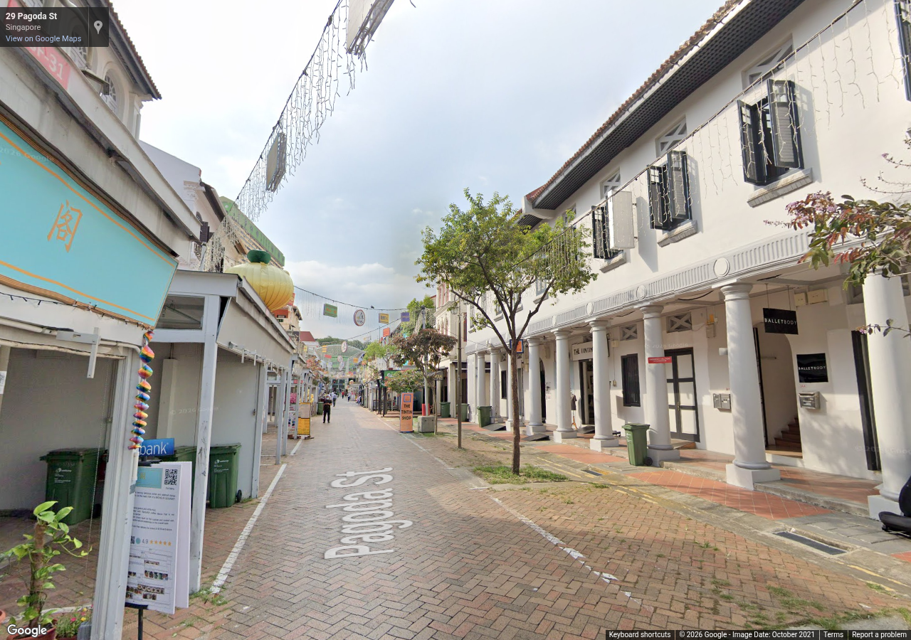

Source 2024-06, heading 250°, pitch 8°, zoom 1. Metadata / review

Source 2021-10, heading 315°, pitch 8°, zoom 1. Metadata / review
Authorized reference screenshots. Attribution retained. Open full-size images to review clarity; capture success alone is not visual acceptance.

